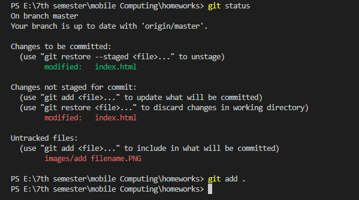
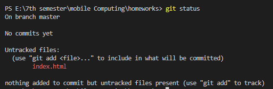
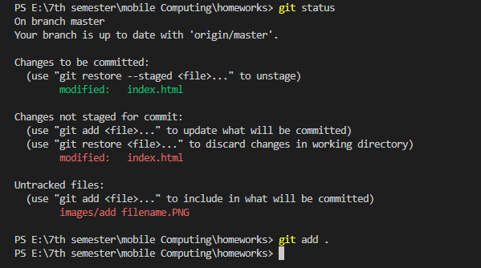
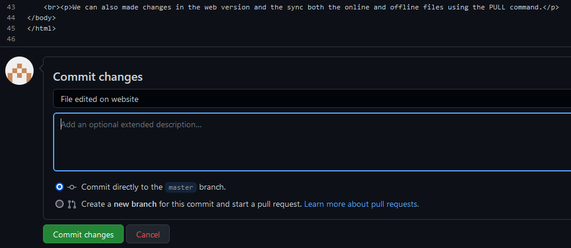

1. git add .
It is used to add all the files at once.

2. git add filename
It is used to add a certain file.

This is the tutorial for creating git repositories and working in them.
Status command tells us about any new changes in the repositories if any new file created or any change occure in the current existig files.
Two syntax to add any file:
1. git add .
It is used to add all the files at once.

2. git add filename
It is used to add a certain file.
Commit command is executed with a message to track changes.
Command used to push changes to the remote repository.
We can also made changes in the web version and the sync both the online and offline files using the PULL command.
If we use push command before pulling the new changes from the web, we get an error.
After using pull command
We can clone an existing repository
and as a result we get all of that repositories data to our computer